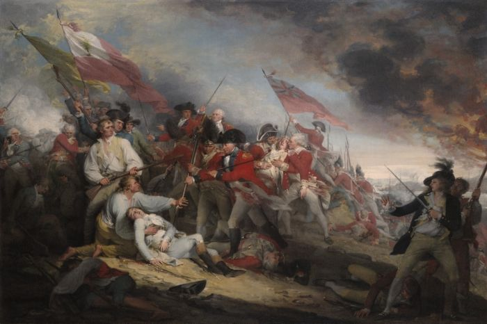
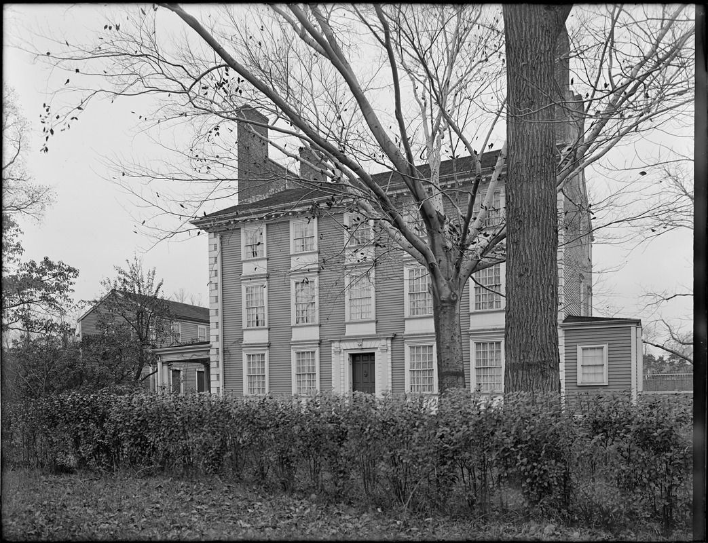
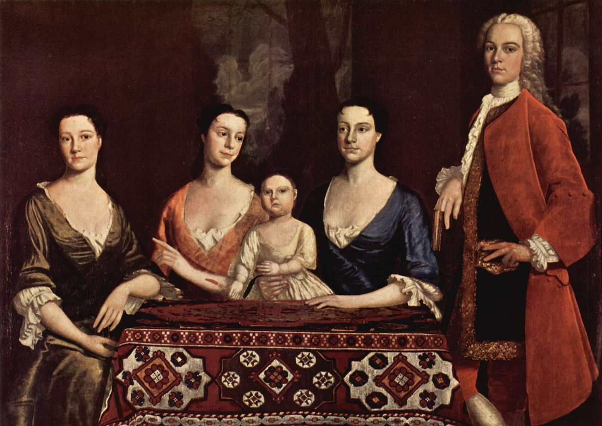
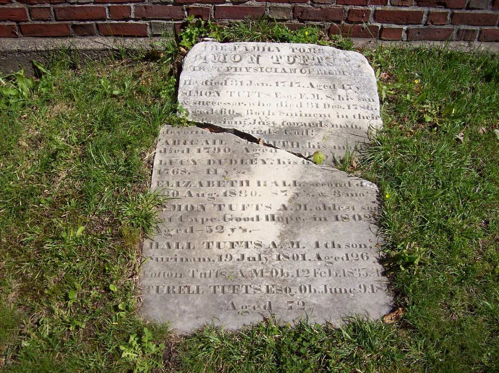

Biography
Dr. Simon Tufts of Medford, older brother of Dr. Cotton Tufts (both children of family no. 11 in Tufts Kinsmen Vol. I), was an ardent Whig and a justice of the peace from 1770. When the fighting began he cared for the wounded on both sides, and he spent the war in the awkward role of guardian to a Loyalist neighbor’s estate.
Service Record
Town: Medford · Dates: [dates not in extract]
Ardent Whig; justice of the peace 1770; took depositions and bound wounds after Lexington and Concord; attended the wounded on both sides at Bunker Hill; lent bounty money for the war. (Tufts Kinsmen, Vol. I, p. 110, family no. 11-1; owner-supplied extract; page scan not on file)
Reluctantly served as conservator of the estate of the Tory Col. Isaac Royall; testified before the Committee of Safety that he believed Royall a friend to the American cause; the Committee refused and ordered the estate surrendered. After Royall’s death in 1781 the state returned the estate to Simon as trustee. (Tufts Kinsmen, Vol. I, p. 110, family no. 11-1; owner-supplied extract; page scan not on file)
Fellow of the Massachusetts Medical Society 1782; died from a fall from his horse. (Tufts Kinsmen, Vol. I, p. 110, family no. 11-1; owner-supplied extract; page scan not on file)
Family Connection
Family number 11-1 in Tufts Kinsmen, Vol. I. Parents are not named in the extract seen.
Relatives with profiles on this site: father Dr. Simon Tufts (1700–1747); brother Dr. Cotton Tufts; son Simon Tufts (1750–1801), by Lucy Dudley; son Turell Tufts (1770–1842), by Elizabeth Hall.
Spouse(s)
- Lucy Dudley (1727–1768). Married February 23, 1749.
- Elizabeth Hall (1743–1830), daughter of Stephen Hall. Married October 5, 1769. As his widow she married Capt. Duncan Ingraham of Concord, July 12, 1795.
“D R. Simon Tufts , Jr. (1727-1786) married Lucy Dudley (1727-1768), February 23, 1749.”
Eliza M. Gill, “Turell Tufts and His Family Connections,” Medford Historical Register, vol. XVIII (1915), p. 54. Text (Perseus)
“He m., 2d, Elizabeth Hall, Oct. 5, 1769”
Charles Brooks, History of the Town of Medford (1855), Register of Families, p. 546. Page scan · Text (Perseus)
Brooks (p. 546) gives Lucy Dudley’s death as “Nov., 1768, aged 41” but no first marriage date. Find a Grave memorial 26903836 gives both marriages (1749, 1769). Place of marriage not found.
Authoritative IDs / Index Numbers
| Source | ID / status |
|---|---|
| Perseus person index (auth=) | auth=tufts,simon. This is a name-level key shared by every Simon Tufts in Perseus, not a personal ID. Use it with the passages cited on this page. |
| Find a Grave memorial | 26903836 (dates and family checked) |
| Brooks, History of Medford (1855) register no. | No. 23-52, p. 546 |
| Tufts Kinsmen, Vol. I family no. | 11-1 |
| Mass. Soldiers and Sailors | Not yet checked for this page |
| DAR ancestor no. | Not yet checked (the DAR GRS needs a browser session) |
| Adams Papers document IDs | ADMS-01-01-02-0010-0007-0001 and others (see Collections) |
| FamilySearch ID | Not yet checked (FamilySearch is blocked from this machine; owner to check) |
| Geni profile | Not yet checked (Geni requires sign-in) |
| WikiTree ID | Not yet checked (WikiTree API refused requests on 3 Nov. 2026: rate limit) |
| Town / vital records | Brooks’s register (above) is drawn from Medford town and church records; printed VR volume and page not yet checked |
Only IDs confirmed against dates and family are given as matches. “Not yet checked” means the source has not been searched; “Checked, not found” means it was searched without a match.
⚑ Unverified
Birth and death dates are not in the extract. Service was civil and medical, not military. The Tufts Kinsmen Vol. I statements on this page come from an extract supplied by the owner and have not yet been checked against a page scan (citation rule: page scan not on file). No other source on this site has yet been checked for this man.
Medical Societies: 1765 and the Massachusetts Medical Society
This section concerns Dr. Simon Tufts the younger (1727–1786), not his father, Dr. Simon Tufts (1700–1747).
The 1765 meeting
“he was one of the first in the State who felt the need of a medical society; and he was called to the first meeting for consummating the plan, which meeting took place on the third Monday in March, 1765, at Gardner’s tavern, on Boston Neck.”
Charles Brooks, History of the Town of Medford (1855), p. 306. Text (Perseus)
The plan itself is credited to his younger brother. Philip Cash calls Dr. Cotton Tufts of Weymouth “the prime mover” of the 1765 attempt, which failed (Philip Cash, “The Professionalization of Boston Medicine, 1760–1803,” Medicine in Colonial Massachusetts (Colonial Society of Massachusetts, 1980), n. 33. Online text). So Simon is recorded as a participant called to the meeting, and Cotton as its organizer.
Fellow of the Massachusetts Medical Society, 1782
Medford’s vital records cite his gravestone as “Simon Tufts Esq., F. M. S.,” that is, Fellow of the Medical Society, and his Find a Grave memorial is headed “Dr Simon F.M.S. Tufts Esq.” (memorial 26903836). The fellowship date of 1782 comes from Tufts Kinsmen, Vol. I, p. 110 (owner-supplied extract; page scan not on file).
⚑ Unverified
The 1782 date of his fellowship has not been confirmed from the Society’s own records.
Pictures









Find a Grave
Find a Grave memorial 26903836. As given there (secondary; not checked against original records): Listed as “Dr Simon F.M.S. Tufts Esq.” Born 16 Jan 1726; died 31 Dec 1786. Salem Street Burying Ground, Medford, plot 35 (Tufts family tomb). Parents Dr. Simon Tufts and Abigail Smith; married Lucy Dudley (1749) and Elizabeth Hall (1769); siblings include Dr. Cotton Tufts. His father, Dr. Simon Tufts (1700–1747), has memorial 26903835 in the same plot.


Business
A man of this name appears in Brooks’s History of Medford in connection with the brickyards. Whether it is this man is Unverified. See Businesses.
Further Research Links
Outside resources for further research. Secondary and user-contributed sites (blogs, family trees, memorial sites, Wikipedia) are not verified here.
- Full PDF / Helen Tilden Wild, Medford in the Revolution (1903) – verbatim instructions to Dr. Simon Tufts on Committee of Correspondence (p. 4) (Internet Archive)
- Find A Grave – Dr. Simon Tufts (Salem Street Burying Ground, Medford, Massachusetts) (Find a Grave)
- Medford Revolutionary War Monument & Minute Men Plaque (High Street, Medford) (monuments.freedomsway.org)
Harvard: Class of 1744
Brooks, p. 305: born Jan. 16, 1727; “graduated at Harvard College in 1744.” He was not the elder Dr. Simon (1700–1747), class of 1724. (Clifford K. Shipton, Sibley’s Harvard Graduates, vol. XI, pp. 478–481 (sketch location from Andrew W. Pollock’s Index of Graduates; sketch text not seen)) See Harvard College.
His Letters
Letters between this Dr. Simon (1727–1786) and the Loyalist Isaac Royall, 1775–1779, are quoted by Brooks (pp. 173–179) and the Medford Historical Register (vol. XI, p. 17). His letters with his brother Cotton are in the Countway Library. See Letters of the Tufts Doctors.
⚑ Unverified
Cause of death. This page’s source says a fall from his horse, and Brooks (p. 306) says a fall brought on bleeding of the lungs. Mary Cranch wrote to Abigail Adams on September 28, 1786 that “Doctor Simon Tufts is just gone in a consumtion” (MHS), and Medford’s church record gives consumption.
His Apprentice, John Brooks
John Brooks (1752–1825), major of minutemen in 1775 and later governor of Massachusetts, was the apprentice of Dr. Simon Tufts the younger (1727–1786). Brooks’s History of Medford says the doctor:
“was so interested in the virtuous character and thirst for knowledge of young John Brooks that he almost adopted him as a son. He took his pupil under a written indenture, as an apprentice for seven years, to learn the science and practice of medicine”
Charles Brooks, History of the Town of Medford (1855), p. 306. Text (Perseus)
Brooks adds that the doctor put him to a classical school, took him into his family, and later invited him back to Medford and “resigned to him his practice.” In 1776 William Tudor wrote to John Adams that Major Brooks “studied Physick with Doctor Tufts of Medford” (Papers of John Adams, vol. 5, pp. 7–9. MHS).
“He was a Medford boy, and only two years before had left the home of Dr. Simon Tufts, where he was educated, to practice medicine in Reading. Probably some of the men had been drilled by him in school-boy days in the vacant lot back of the doctor’s house.”
Medford Historical Register, vol. III, p. 31, on the Medford minute company of April 19, 1775. Perseus
The fullest account is Dr. John Dixwell’s memoir of Brooks, which Charles Brooks quotes in his History of Medford. It describes the apprentice years in the younger doctor’s household, which began when John Brooks was fourteen (about 1766, nearly twenty years after the elder Dr. Simon’s death in 1747):
“In the hours of relaxation from study, he amused himself with the drill and exercise of the soldier. His manners were so gentle and attractive that he was the delight of all the village boys; they collected about him as the chief source of their pleasures and amusements; he formed them into a company, and trained and exercised them in all the duties of military discipline. Dr. Tuft’s yard was often converted into a train-field, and displayed in miniature all ‘the pomp and circumstance of glorious war.’”
Dr. John Dixwell, quoted in Charles Brooks, History of the Town of Medford (1855), p. 128 (the 1886 Usher edition reprints it, pp. 132–133). Internet Archive text
Note: this is the source for the family story of training at Dr. Tufts’s. As printed, it describes a boys’ company drilled by the young apprentice in the doctor’s yard, not the Medford minutemen, and it says “yard,” not farmhouse or farm. The Register’s “probably” above is a later guess that some of those boys became the men of 1775.
⚑ Unverified
That the Medford minute company of 1775 itself trained at Dr. Tufts’s house or farm. No source found says so. Brooks’s History (1855, p. 128) describes only the boys’ drills in the doctor’s yard during Brooks’s apprenticeship (about 1766–1773).
Salem Street Burying Ground
Buried in plot 35 with his father. See Salem Street Burying Ground and its 1930 tablets.